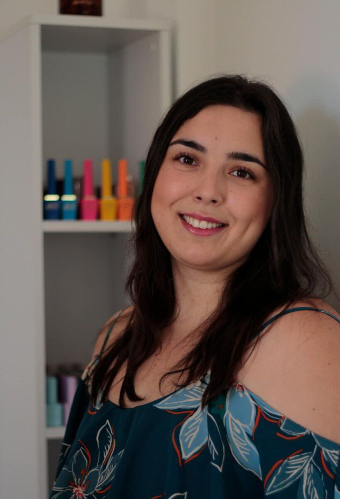

Baracz Eszter
Tulajdonos, masszőr
Üdvözöllek a Kuckóban! Baracz Eszter vagyok, a szalon megálmodója és egyben masszőre. Tanulmányaim során sokféle masszázst sajátítottam el (thai, hawaii, svéd, ayurvédikus kezelések), és ezekből alakítottam ki a saját stílusomat.
Kifejezetten szeretem azokat a vendégeket, akik bírják a gyűrődést: úgy gondolom, erős technikával lehet a legjobb eredményt elérni, így ha „simogatós” masszázst keresel, nem én vagyok a terapeutád. Hiszek a test és a lélek kapcsolatában, a józan ész határain belül. Kezelés közben általában nem beszélgetek, a visszajelzés viszont fontos számomra.
Új vendéget csak ajánlás alapján fogadok, és kizárólag női masszázst végzek. Ha szimpatikusnak találsz, keress bátran, de előtte mindenképp olvasd el a házirendet és a masszázs kizáró tényezőit.
Miért engem válassz?
- Többféle technikát sajátítottam el, így minden masszázs egyedi, nem futószalagos.
- Naponta legfeljebb három vendéget vállalok, hogy fizikailag és mentálisan is a maximumot nyújthassam.
- Mindig hozzád igazodom: mi fáj jobban, mi esik jól.
- Erős technikával, minőségi olajokkal dolgozom, csendes, tiszta környezetben.
- Kezelés közben nem csacsogok, a fókusz rajtad van.
- Nyugodtan szólj, ha valami túl erős vagy nem kellemes: figyelek és vigyázok rád.
- Nem vagyok guru vagy varázsló, de hiszek az energetikában, és ha te is nyitott vagy rá, ezen a téren is dolgozhatunk.